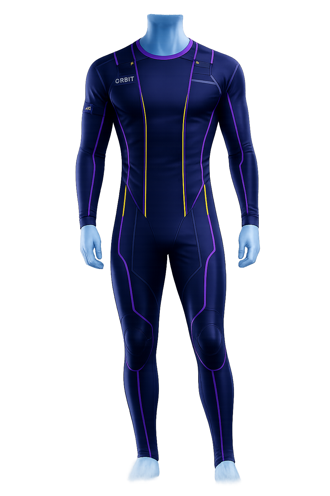
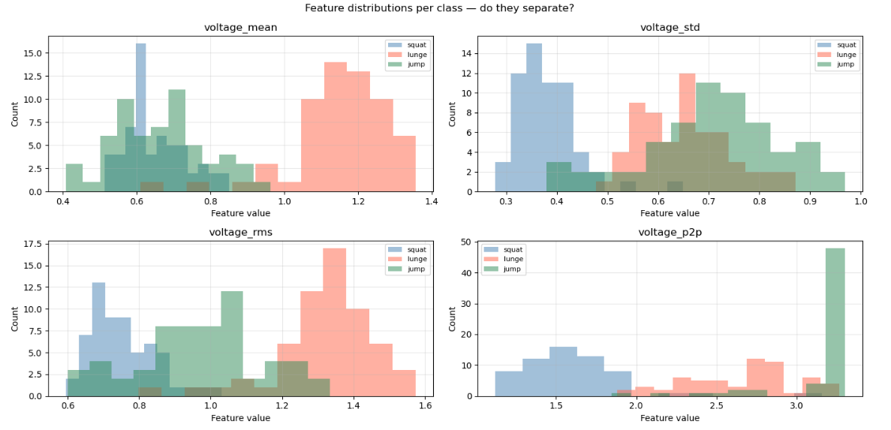
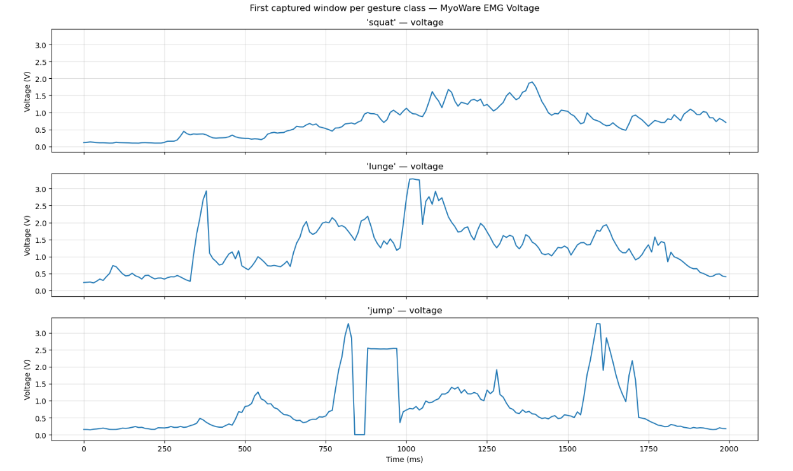

ORBIT stands for Onboard Readiness & Bio-Intelligence Telemetry. It is a biomedical engineering senior design project focused on developing a wearable monitoring system for long-duration spaceflight. The project is being designed to track muscle activation, fatigue trends, posture drift, movement-related strain, and physical readiness through sensor-based data and intelligent feedback.

Envisioned Wearable Platform
This rendering shows the intended direction for ORBIT: a compression-shirt-style wearable with integrated sensing pathways for muscle monitoring, posture awareness, and readiness feedback.
The visual is a concept model, not a completed prototype. It helps communicate how the final system may bring together sEMG sensors, strain or stretch sensing, embedded electronics, and visual feedback into one wearable astronaut-health platform.


Project Purpose
Long-duration spaceflight can contribute to muscle loss, fatigue, reduced physical performance, and neuromuscular deconditioning. ORBIT is being designed to explore how wearable sensors and intelligent data processing could help monitor these changes by providing feedback on muscle activity, fatigue trends, posture changes, and overall readiness.
The project is focused on research, monitoring, and decision-support concepts rather than medical diagnosis.
Main Objectives
- Collect muscle activity data using sEMG sensors.
- Detect muscle activation and fatigue trends through signal processing.
- Explore strain or stretch sensors for body loading and movement-related strain.
- Provide visual feedback through an LED muscle activity display.
- Create a user interface for fatigue, readiness, posture, and sensor data.
- Explore computer vision for posture tracking and drift detection.
System Architecture
ORBIT is planned as a multi-component wearable monitoring system built around the flow: wearable sensors to microcontroller, microcontroller to processing system, processing system to dashboard, and dashboard to feedback or visualization. A wearable compression-shirt-style platform is being considered for integrating physiological and movement-related sensing into one coordinated prototype.
- Wearable sensors collect physiological and movement-related data.
- A microcontroller reads and organizes sensor signals.
- A Raspberry Pi, laptop, or computer supports signal analysis and visualization.
- A dashboard displays readiness, fatigue, posture, and sensor trends.
- LED feedback or heat-map concepts provide intuitive visual status cues.
Completed sEMG Foundation Work
The sEMG portion of the project has already been explored through MyoWare-based data collection and feature analysis. This completed work supports ORBIT's planned muscle-monitoring subsystem by demonstrating how muscle activation data can be collected, organized, and transformed into useful features.
- Used MyoWare 2.0 or equivalent sEMG sensing concepts for muscle signal acquisition.
- Collected and organized raw and processed muscle signal data.
- Explored baseline comparison, muscle activation detection, and feature extraction.
- Evaluated features such as RMS, MAV, variance, peak count, activation duration, and voltage-based distributions.
Signal Processing & Fatigue Detection
ORBIT will use biomedical signal processing concepts to convert raw sEMG data into meaningful readiness information. Because muscle signals can be noisy, the system will require preprocessing and feature extraction before the data can support fatigue-related interpretation.
Planned Subsystems
Several ORBIT subsystems are planned or under design. These are included as project goals and should be read as intended development work, not completed results.
- Strain and loading: strain gauges or stretch sensors may be used to estimate mechanical loading, movement-related strain, or possible bone-load indicators.
- LED visualization: an LED matrix or display may show muscle activation, fatigue status, left/right comparison, or color-coded readiness indicators.
- Dashboard: the user interface is planned to show sEMG signals, fatigue indicators, readiness status, strain data, posture warnings, session logs, and trend graphs.
- Computer vision: a camera-based subsystem may support posture drift detection, body position tracking, and possible 2-axis camera gimbal control.
Tools & Technologies
- Surface EMG sensors, MyoWare 2.0 Muscle Sensor, and EMG electrodes.
- Arduino Nano 33 BLE Sense or similar microcontroller.
- Raspberry Pi 5, laptop, or computer for higher-level processing.
- Strain gauges or stretch sensors, LED matrix or LED display system.
- Python, Arduino IDE, CSV data logging, signal processing, dashboard and computer vision concepts.
Engineering Challenges
ORBIT involves several important engineering challenges. Reliable sEMG data collection is sensitive to electrode placement, motion artifacts, skin contact, wire movement, and baseline noise. Another challenge is integrating multiple subsystems into one coordinated wearable platform while keeping the system understandable, testable, and practical for demonstration.
- Choosing reliable electrode placement and reducing signal noise.
- Designing wearable wiring and sensor placement.
- Creating useful fatigue metrics and readiness indicators.
- Calibrating strain or load sensors.
- Building a readable dashboard and coordinating hardware/software components.
Project Significance
ORBIT is significant because it combines biomedical engineering, space health, wearable technology, and artificial intelligence concepts into one integrated system. The project explores how physiological data and intelligent feedback could help monitor astronaut readiness during long-duration missions. The same ideas could also apply to rehabilitation, physical therapy, athletic performance, occupational health, military readiness, and remote patient monitoring.
Future Improvements
- Test the wearable system with more participants and collect larger sEMG datasets.
- Improve dry electrode or conductive fabric integration.
- Add machine learning classification for fatigue or movement state.
- Improve real-time dashboard responsiveness and muscle activity heat maps.
- Combine sEMG, strain, IMU, and computer vision data.
- Make the wearable system more compact, comfortable, and demonstration-ready.
Summary
ORBIT is an in-progress wearable biomedical monitoring system designed to track muscle activity, fatigue, posture, and readiness using sEMG sensors, strain or stretch sensors, embedded systems, data visualization, and computer vision concepts. Through this project, I am developing skills in biomedical instrumentation, signal processing, embedded programming, wearable sensor design, systems engineering, and human-centered health technology.